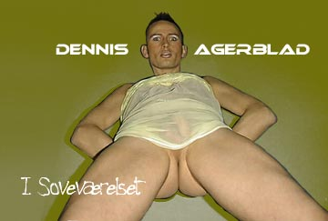
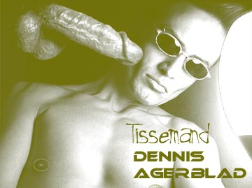

Sid ned og nyd en intim cabaret med performere fra dunst som fremfører egne værker.
| Dennis Agerblad Nyhedsbrev | 24-Jan-2003 |
| Her er det nyeste om Dennis Agerblad. Hvis
du vil læse mere så klik dig ind på www.dennisagerblad.dk
Du kan altid afmelde dig nyhedsbrevet her |
|
| - - - |
| Avantgarde gay cabaret | 22-Feb-2003 |
|
|
| Vært: Hairverk. Sid ned og nyd en intim cabaret med performere fra dunst som fremfører egne værker. |
|
| - - - |
| Video |
| Så er der kommet video-klip under musik. |
| Se Dennis Agerblad skælde ud. |
| Dumme
Skid Format: mpg Størrelse: 3804 kilobytes Jeg hedder Dennis Agerblad. Fat det så din dumme skid. Åh... Idiot. Kan du ikke forstå en skid. Din dumme pølse. |
 |
| - - - |
| På Scenen |
| Så er der kommet billeder fra sceneoptrædener. |
| Grr-it præsenterer et spetakel | 20-Des-2002 | ||
|
|||
| World AIDS Day | 01-Dec-2002 | ||
|
|||
| Stemmetæller på Danmarks Design Skole |
08-Sep-2002 | ||
|
|||
| - - - |
| Begivenheder |
| Der er kommet billeder fra fire festligheder. 3 fra i 2002 og en fra 1991. |
| Fest | 09-Nov-2002 | ||
|
|||
| Electical Records Åbnings Reseption |
11-Sep-2002 | ||
|
|||
| Electical fest i dunst | 14-Sep-2002 | ||
|
|||
| 21 års fødselsdag | 10-Apr-1991 | ||
|
|||
| - - - |
| Diskoteket |
| Så er der kommet nyt i diskoteket. |
| Dennis Agerblads sange fra World AIDS Day |
01-Des-2002 |
 Dødens Pølse (sikker sex sang).mp3
Dødens Pølse (sikker sex sang).mp3 0:27 min. Størrelse 426kb "Han er en flot fræk fyr. Han dyrker sex som et dyr. Men imellem hans ben hænger dødens pølse." Tekst, Musik, Sang & Kor: Dennis Agerblad. Harmonika: Michael Netschajeff. |
|
|
Hvis du viste.mp3 0:29 min. Størrelse 466 Kb "Hvis du viste hvad det var du gik ind til ville du nok vende om igen. " Tekst, Musik, Sang & Kor: Dennis Agerblad. Harmonika: Michael Netschajeff. |
|
| - - - |
| Galleri - Sex |
| Så er der kommet nye galleri'er. |
| I Soveværelset | |
 |
|
| Tissemand | |
 |
|
| - - - |
| www.dennisagerblad.dk |